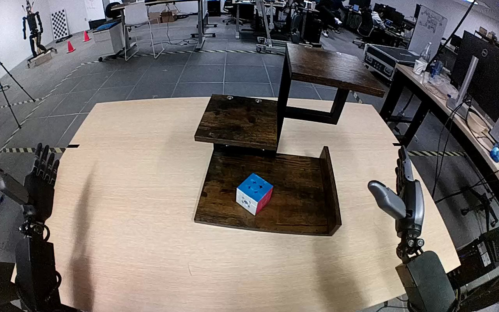

NVIDIA GR1 · 54
Video 54

Visual review action_review.json
{
"prompt_protocol": "humanoid_action_v1",
"prompt_provenance": "visually_authored_from_video_and_initial_frame",
"reviewed_contact_sheets": [
"sheet_001.jpg"
],
"inspected_frame_stride": 2,
"inspected_sampled_frame_count": 60,
"initial_scene": "The egocentric view shows both robot forearms reaching from the lower sides of the image toward a three-level wooden shelf. A blue, white and red Rubik's cube sits on its lowest tray. Both hands initially open; the right hand is beside the tray and the left remains off to the left.",
"observed_sequence": [
{
"start_frame": 0,
"end_frame": 15,
"action": "Both hands are open and stationary beside the shelf; cube rests on lowest wooden tray.",
"confidence": "high"
},
{
"start_frame": 16,
"end_frame": 39,
"action": "Right forearm advances toward cube, positioning open thumb and fingers on opposing sides; left hand remains idle.",
"confidence": "high"
},
{
"start_frame": 40,
"end_frame": 73,
"action": "Right fingers close around cube while it remains at the lowest tray; hand settles its grasp.",
"confidence": "high"
},
{
"start_frame": 74,
"end_frame": 101,
"action": "Right hand lifts the cube clear of the lower tray and carries it upward and to the right toward the highest wooden shelf.",
"confidence": "high"
},
{
"start_frame": 102,
"end_frame": 116,
"action": "Right hand carries cube over the highest shelf and lowers it toward the wooden surface, retaining visible finger contact.",
"confidence": "high"
},
{
"start_frame": 117,
"end_frame": 119,
"action": "Right fingers begin opening around the cube at the highest shelf; hand stays immediately around it at the final frame.",
"confidence": "high"
}
],
"arm_hand_roles": {
"right": "Sole manipulating hand: closes fingers around cube, lifts from bottom tray, transports to highest shelf, lowers and starts opening fingers.",
"left": "Open and idle throughout; no cube contact, stabilization or transfer."
},
"anatomical_side_evidence": {
"basis": "The camera looks outward from between the robot's own arms. Forearms extend from the body-side lower left and lower right respectively; their palm and thumb orientation is consistent with left and right hands viewed from the robot's perspective. The active forearm extends from the robot's right body side rather than an opposing robot facing the camera.",
"confidence": "high",
"uncertainty": "Shoulders and full torso are outside this egocentric view, but bilateral own-arm attachment direction and palm orientation establish the convention."
},
"coordination": "Single right-hand manipulation. Left hand does not participate; there is no hand-to-hand transfer or human interaction.",
"evidence_frame_indices": [
0,
40,
68,
78,
102,
112,
116,
119
],
"native_initial_png_inspected": true,
"inspection_coverage": "Visually inspected all 60 stride-2 decoded frames in sheet_001.jpg, the source first-frame PNG at native 1280x800, and native details at 40, 68, 78, 102, 112, 116 and final frame 119.",
"terminal_state": "Cube is at the highest wooden shelf with right fingers beginning to open. The hand remains around the cube; the lower contact area is occluded by the hand and no fully withdrawn hand or unambiguously independent resting cube is shown. Lowest tray is empty and left hand remains idle.",
"selected_execution_status": "incomplete",
"uncertainties": [
"At the ending, the right hand occludes the cube's lower surface and shelf contact. Full release and independent stable support by the top shelf are not established."
],
"annotation_discrepancies": [],
"video_id": "54",
"dataset": "NVIDIA_GR1_100",
"dedicated_review_agent": "review_gr1_54",
"review_source_video": "NVIDIA_GR1_100/54/original/original.mp4",
"source_frame_count": 120,
"source_fps": 20.0,
"native_detail_frames": [
40,
68,
78,
102,
112,
116,
119
],
"world_model_prompt": "The robot closes its right hand around the Rubik's cube on the bottom wooden shelf and lifts it clear. It raises the cube to the top wooden shelf, lowers it toward the surface, and begins opening its fingers while the hand remains around the cube. Keep the camera fixed; preserve robot geometry, physically valid joint motion, and normal gripper opening and closing.",
"original_task_instruction": "Use the right hand to pick up rubik's cube from bottom wooden shelf to top wooden shelf.",
"selected_segment": {
"start_frame": 0,
"end_frame_exclusive": 120,
"reason": "Complete original single-task reference; no cropping or trimming requested."
},
"source_video_sha256": "7152da3242736da255ad4a3f2e2dadd7c16c89771c17db101d56ae13ceb9edef",
"review_completed_at": "2026-10-13T18:13:04.759829+00:00"
}